library(tidyverse)
library(here)
library(readxl)
library(writexl)Solutions Lab 3 practice
Practice 1
Setup
I saved my R code in a script called practice1.R which is stored in the project folder.
First, we load all the packages that we are going to use
Then, we read the data.
# declare where you are in your project folder
i_am("practice1.R")
# construct the path to your data
path <- here("data", "employees.xlsx")
# read the data and store it in dt
dt <- read_xlsx(path=path)Exercise 1
The function dim() returns the dimensions of the input. The first number is the number of rows. The second denotes the number of columns.
dim(dt)[1] 150 6Thus, the dataset stored in dt collects information about 150 employees.
You can extract the same dimensions by using the specialised functions nrow()and ncol()
nrow(dt)[1] 150ncol(dt)[1] 6A convenient way to quickly summarise the variables in your dataset is the function summary().
summary(dt) last_name first_name department seniority
Length:150 Length:150 Length:150 Min. : 0.000
Class :character Class :character Class :character 1st Qu.: 4.000
Mode :character Mode :character Mode :character Median : 7.000
Mean : 7.487
3rd Qu.:12.000
Max. :15.000
salary ID
Min. : 42664 Min. :1001
1st Qu.: 74397 1st Qu.:1038
Median :102606 Median :1076
Mean :103789 Mean :1076
3rd Qu.:129346 3rd Qu.:1113
Max. :192685 Max. :1150 For each variable in your dataset, it returns some summary statistics. In case of numeric values, as for seniority and salary, it provides you with mean and quantiles. You can extract the same information by using the corresponding specialised functions (recall that the $operator allows you to access a given column from a data.frame object):
mean(dt$seniority)[1] 7.486667median(dt$seniority)[1] 7quantile(dt$seniority) 0% 25% 50% 75% 100%
0 4 7 12 15 Exercise 2
Exercise 2.1
We are interested in the top 3 earners from the I.T. deprtament. The arrange() function arranges values in ascending order by default. To switch to descending order you can either ask arrange() to sort according to -salary or wrap it in the desc() function:
dt |>
filter(department=="I.T.") |>
arrange(-salary) # A tibble: 25 × 6
last_name first_name department seniority salary ID
<chr> <chr> <chr> <dbl> <dbl> <dbl>
1 Tutt Jerry I.T. 15 192685. 1032
2 Aldaz Alexis I.T. 15 192046. 1058
3 Clark Harrison I.T. 15 190690. 1114
4 al-El-Sayed Muna I.T. 14 181644. 1052
5 Running Rabbit Alexandra I.T. 13 172680. 1103
6 Martinez Leydy I.T. 12 165690. 1138
7 Theno Kiana I.T. 11 154312. 1140
8 Shazier Alea I.T. 10 148184. 1012
9 Sherbon Sydney I.T. 10 146050. 1048
10 Hamlin Connor I.T. 9 139380. 1057
# ℹ 15 more rowsdt |>
filter(department=="I.T.") |>
arrange(desc(salary))# A tibble: 25 × 6
last_name first_name department seniority salary ID
<chr> <chr> <chr> <dbl> <dbl> <dbl>
1 Tutt Jerry I.T. 15 192685. 1032
2 Aldaz Alexis I.T. 15 192046. 1058
3 Clark Harrison I.T. 15 190690. 1114
4 al-El-Sayed Muna I.T. 14 181644. 1052
5 Running Rabbit Alexandra I.T. 13 172680. 1103
6 Martinez Leydy I.T. 12 165690. 1138
7 Theno Kiana I.T. 11 154312. 1140
8 Shazier Alea I.T. 10 148184. 1012
9 Sherbon Sydney I.T. 10 146050. 1048
10 Hamlin Connor I.T. 9 139380. 1057
# ℹ 15 more rowsIf you want to focus on the top three and drop all the other employess, you might want to leverage the function row_number()
dt |>
filter(department=="I.T.") |>
arrange(desc(salary)) |>
filter(row_number()<=3) # after arranging, you retain only employees in the top 3 rows# A tibble: 3 × 6
last_name first_name department seniority salary ID
<chr> <chr> <chr> <dbl> <dbl> <dbl>
1 Tutt Jerry I.T. 15 192685. 1032
2 Aldaz Alexis I.T. 15 192046. 1058
3 Clark Harrison I.T. 15 190690. 1114Exercise 2.2
We now want to compute the median salary of the I.T. department. There are many ways to do it. The most immediate is to use
dt |>
group_by(department) |>
summarise(salary=median(salary))# A tibble: 6 × 2
department salary
<chr> <dbl>
1 Accounting 80716.
2 Finance 90454.
3 HR 110257.
4 I.T. 119080.
5 Marketing 107778.
6 Sales 106649.which evaluates the median salary of each department, included the I.T. one. If you want to focus on the I.T department, you can use the filter() function. In this case, from a logical point of view, it is equivalent if you call filter() before or after summarise()
dt |>
filter(department=="I.T.") |>
group_by(department) |>
summarise(salary=median(salary))# A tibble: 1 × 2
department salary
<chr> <dbl>
1 I.T. 119080.dt |>
group_by(department) |>
summarise(salary=median(salary)) |>
filter(department=="I.T.") # A tibble: 1 × 2
department salary
<chr> <dbl>
1 I.T. 119080.Exercise 2.3
The exercise asks to construct a scatterplot for salary and seniority, colored by department using the ggplot2 package, which is automatically loaded with tidyverse
salary_plot <- ggplot(dt, aes(x=seniority, y=salary, color=department))+
geom_point()
salary_plot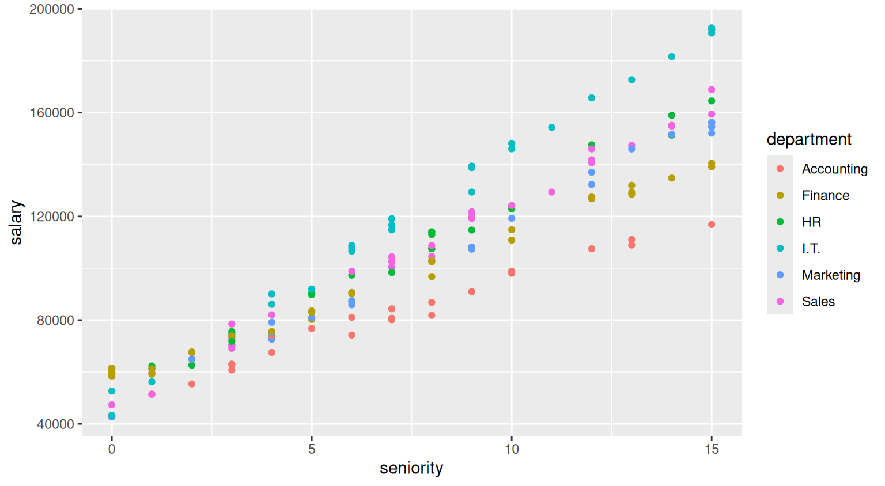
The ggplot2 package is one of the most powerful plotting software available on the market, and provides the user with a wide set of tools to produce highly flexible and customisable graphs.
A very basic tweak you typically want to apply to your graph is to change its labels by using the labs() function
salary_plot <- salary_plot +
labs(
x="Seniority (years since hiring)",
y="Salary ($)",
color="Department:"
)
salary_plot 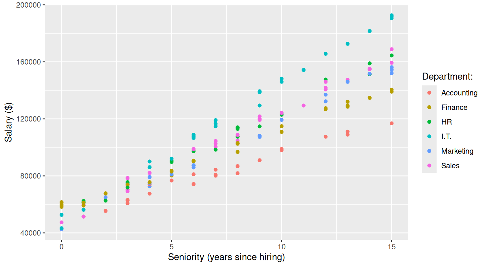
The labs() function can also be used to set title and subtitle of the plot
salary_plot <- salary_plot +
labs(
title="Does salary increase with seniority?",
subtitle="Department by department evaluation"
)
salary_plot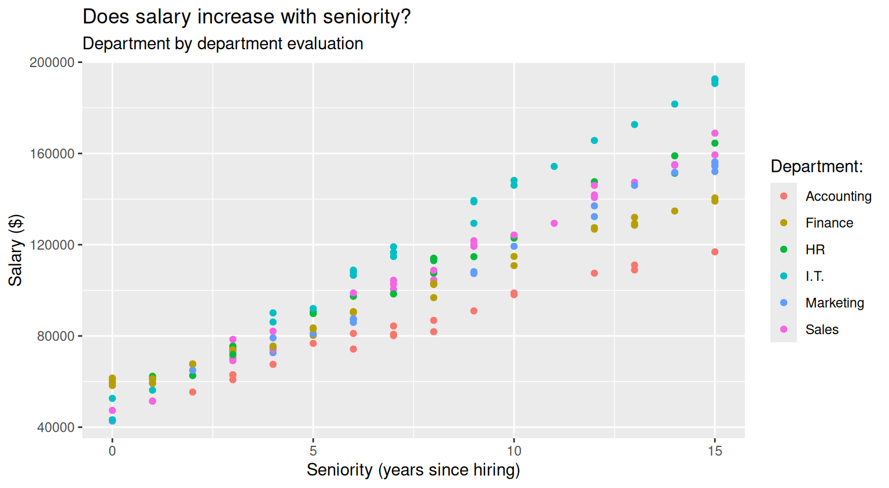
When you compare across many groups, it might be more convenient to plot groups in separate panels. You produce such plots by using the facet_grid() or the facet_wrap() functions:
salary_plot+
facet_grid(~department)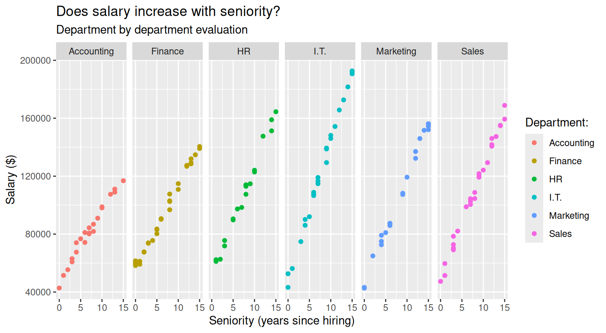
salary_plot <- salary_plot+
facet_wrap(~department)
salary_plot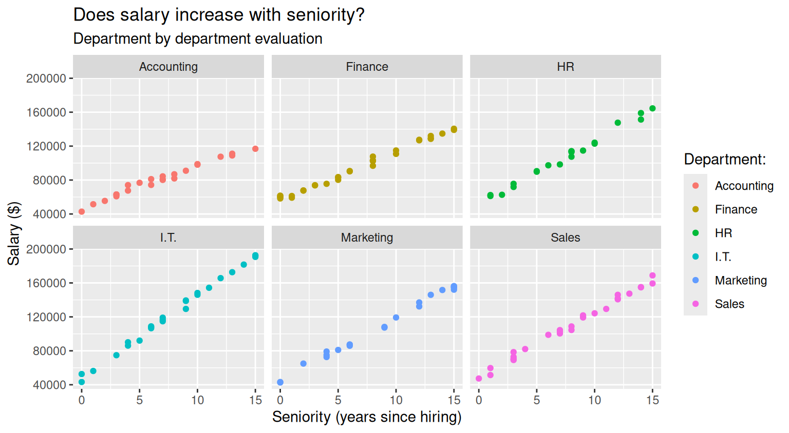
You can use preset themes to quickly modify the appearances of your plot. For example
salary_plot + theme_bw()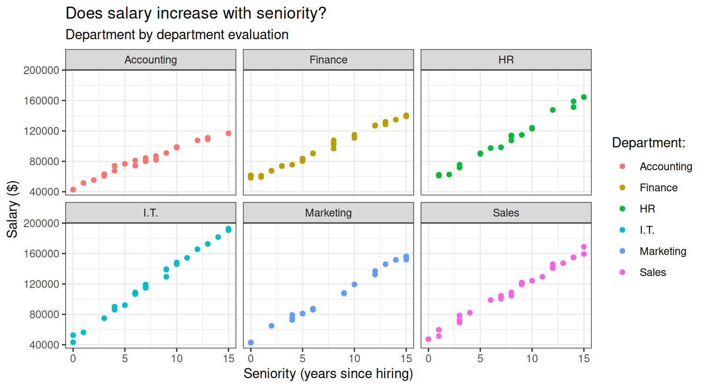
salary_plot + theme_light()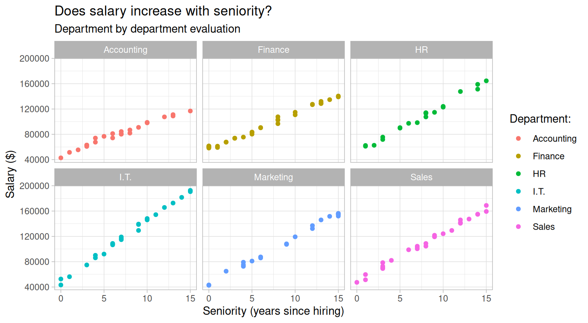
salary_plot <- salary_plot + theme_minimal()
salary_plot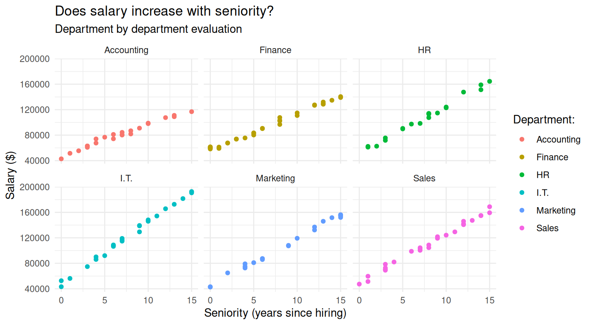
You can further customise your plot by using the theme() function. See ?theme() for the full list of options available. For example
salary_plot +
theme(
legend.position="bottom", # move the legend in a different position
panel.grid.minor=element_blank() # remove minor grid lines
)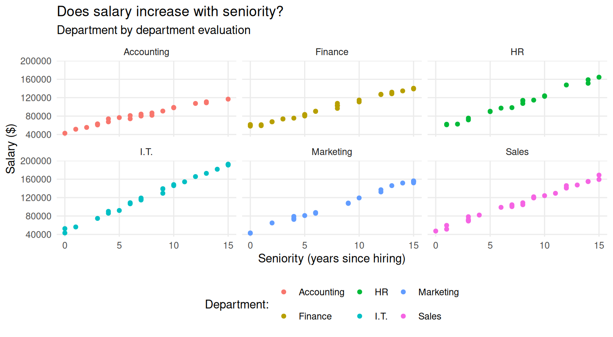
Since we are using panels to differentiate across departments, the legend for colors is not really needed, thus, it might be sensible to remove it
salary_plot <- salary_plot +
theme(
legend.position="none", # remove the legend
panel.grid.minor=element_blank() # declutter the plot by removing minor grid lines
)
salary_plot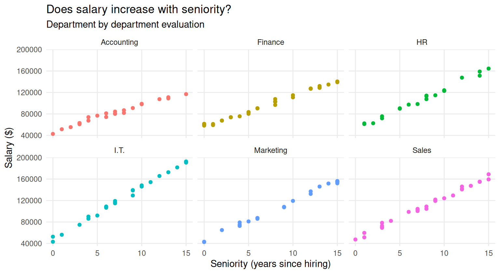
You can also customise the colors of the plots. For example, you can use a customised palette by specifying colors via hex codes,
my_palette <- c(
"Accounting" = "#F7B1AB",
"Finance" = "#807182",
"HR" = "#E3DDDD",
"I.T" = "#A45C3D",
"Sales" = "#5c3410ff",
"Marketing" = "#1C0221"
)
salary_plot +
scale_color_manual(values=my_palette)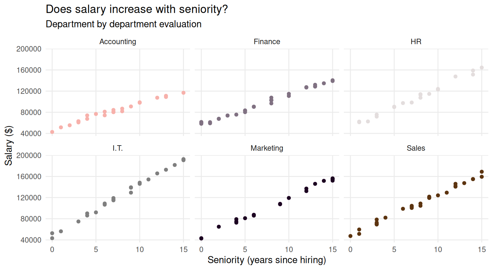
You can use ready-to-use color palettes provided by ggplot2
salary_plot+
scale_color_viridis_d()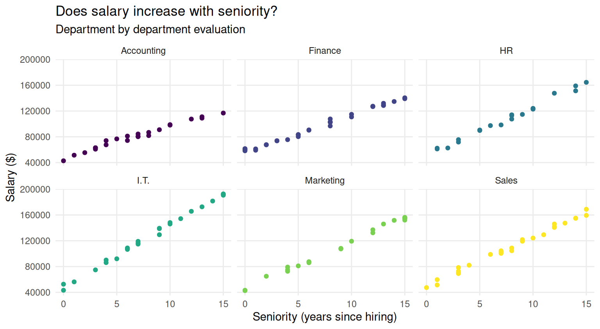
You can also use color palettes provided by external packages, such as ggsci() or ggokabeito
library(ggokabeito)
salary_plot <- salary_plot +
scale_color_okabe_ito()
salary_plot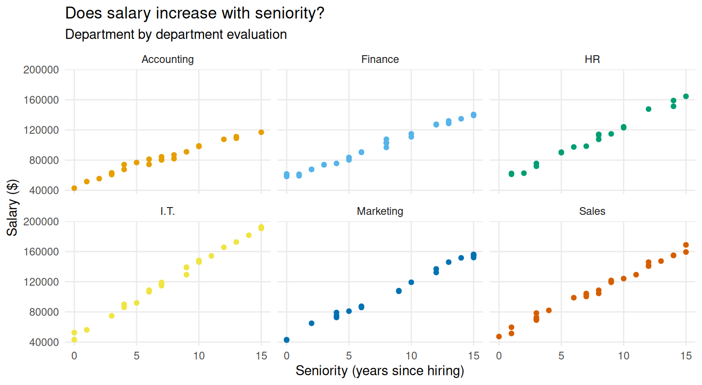
Nevertheless, there are many other possibilities of customisation. You can find a whole book in this regard in the resources page.
When you are satisfied with your plot, you can save it with the ggsave() function. See ?ggsave() for a list of the exportable formats.
# You can save it in many different formats
ggsave(salary_plot, path = here("salary_plot.jpg")) # save it in jpg format
ggsave(salary_plot, path = here("salary_plot.pdf")) # save it in pdf format
ggsave(salary_plot, path = here("salary_plot.png")) # save it in png format
# You can also customise dimensions to better fit in your documents/slides
ggsave(salary_plot, path = here("salary_plot_wide.jpg"), width=10, height = 5)
ggsave(salary_plot, path = here("salary_plot_square.jpg"), width=8, height = 8)Exercise 3
dt |>
group_by(department) |>
summarise(
total=sum(salary),
average=mean(salary)
)# A tibble: 6 × 3
department total average
<chr> <dbl> <dbl>
1 Accounting 1856399. 80713.
2 Finance 3004418. 93888.
3 HR 2142249. 107112.
4 I.T. 3120520. 124821.
5 Marketing 2394822. 108856.
6 Sales 3049907. 108925.Exercise 4
Exercise 4.1
To check how many employees have just been hired across all departments we can use the filter() function
dt |>
filter(seniority==0)# A tibble: 11 × 6
last_name first_name department seniority salary ID
<chr> <chr> <chr> <dbl> <dbl> <dbl>
1 al-Momin Mu'mina Sales 0 47359. 1009
2 Heng Marina Accounting 0 42770. 1026
3 Huynh Alicia Finance 0 61532. 1027
4 Zavala Kristina Finance 0 61431. 1068
5 el-Ameen Haneef Finance 0 58284. 1089
6 al-Abdallah Labeeb Finance 0 59477. 1106
7 Hiler Margaret Finance 0 60065. 1123
8 Zheng Brittany I.T. 0 52634. 1126
9 al-Jamal Muna Marketing 0 42664. 1128
10 Apodaca-Anaya Daniel Marketing 0 43220. 1148
11 Novell Lindsey I.T. 0 43226. 1149the command returns eleven rows, so we already know the number of new hired is 11. However, we might want to explicitely compute the exact number. In this case, we can use the n() function, which do nothing else but counting elements
dt |>
filter(seniority==0) |>
summarise(new_hires = n())# A tibble: 1 × 1
new_hires
<int>
1 11See, however, that while you might expect to get a number, R is returning you a 1x1 tibble. If you need the numeric format, you can use
dt |>
filter(seniority==0) |>
summarise(new_hires = n()) |>
as.numeric()[1] 11Exercise 4.2
To count the new hires by department, it is sufficient to add the specification of the grouping structure, that is
new_hires_table <- dt |>
group_by(department) |>
filter(seniority==0) |>
summarise(new_hires = n())
new_hires_table# A tibble: 5 × 2
department new_hires
<chr> <int>
1 Accounting 1
2 Finance 5
3 I.T. 2
4 Marketing 2
5 Sales 1Obviously, if you sum the new hires by department, you still get 11, as expected
sum(new_hires_table$new_hires)[1] 11If you want to extract the value for the I.T. department you can use filter()
new_hires_table |>
filter(department=="I.T.") # A tibble: 1 × 2
department new_hires
<chr> <int>
1 I.T. 2and if you want to extract the numeric value only, you can use
new_hires_table |>
filter(department=="I.T.") |>
select(new_hires) |>
as.numeric()[1] 2Exercise 4.3
We focus on employees of the Finance department with at least 8 years seniority. Thus, first we specify such conditions in the filtering function, and then we summarise the salary of the filtered rows
dt |>
filter(department=="Finance", seniority >= 8) |>
summarise(average_salary = mean(salary))# A tibble: 1 × 1
average_salary
<dbl>
1 119800.If you want to do it by department, and at the same time checking how many employees satisfy the seniority condition, you can use
dt |>
filter(seniority >= 8) |>
group_by(department) |>
summarise(
average_salary = mean(salary),
number_of_employees = n()
)# A tibble: 6 × 3
department average_salary number_of_employees
<chr> <dbl> <int>
1 Accounting 100111. 9
2 Finance 119800. 15
3 HR 130238. 11
4 I.T. 162628. 12
5 Marketing 139627. 12
6 Sales 136137. 15Exercise 5
We need to compute the median salary, the total number of employees and the number of new hires by department. To do everything it the same summarise() call, there a small “trick” for what concerns the new hires. Recall how comparisons work in terms of logical values. If you call
dt$seniority==0 [1] FALSE FALSE FALSE FALSE FALSE FALSE FALSE FALSE TRUE FALSE FALSE FALSE
[13] FALSE FALSE FALSE FALSE FALSE FALSE FALSE FALSE FALSE FALSE FALSE FALSE
[25] FALSE TRUE TRUE FALSE FALSE FALSE FALSE FALSE FALSE FALSE FALSE FALSE
[37] FALSE FALSE FALSE FALSE FALSE FALSE FALSE FALSE FALSE FALSE FALSE FALSE
[49] FALSE FALSE FALSE FALSE FALSE FALSE FALSE FALSE FALSE FALSE FALSE FALSE
[61] FALSE FALSE FALSE FALSE FALSE FALSE FALSE TRUE FALSE FALSE FALSE FALSE
[73] FALSE FALSE FALSE FALSE FALSE FALSE FALSE FALSE FALSE FALSE FALSE FALSE
[85] FALSE FALSE FALSE FALSE TRUE FALSE FALSE FALSE FALSE FALSE FALSE FALSE
[97] FALSE FALSE FALSE FALSE FALSE FALSE FALSE FALSE FALSE TRUE FALSE FALSE
[109] FALSE FALSE FALSE FALSE FALSE FALSE FALSE FALSE FALSE FALSE FALSE FALSE
[121] FALSE FALSE TRUE FALSE FALSE TRUE FALSE TRUE FALSE FALSE FALSE FALSE
[133] FALSE FALSE FALSE FALSE FALSE FALSE FALSE FALSE FALSE FALSE FALSE FALSE
[145] FALSE FALSE FALSE TRUE TRUE FALSER returns a vector of TRUE and FALSE, where each element denotes if that specific row of the dataset is a new hire or not. If you call a function expecting a numeric input on such a vector, R will automatically consider TRUE as 1 and FALSE as 0. Thus
sum(dt$seniority==0)[1] 11returns the number of TRUEs in the vector, that is the number of new hires in the company. Therefore, we can compute such number by department by using
report_table <- dt |>
group_by(department) |>
summarise(
med_sal=median(salary),
total_n =n(),
new_hires= sum(seniority==0)
)
report_table# A tibble: 6 × 4
department med_sal total_n new_hires
<chr> <dbl> <int> <int>
1 Accounting 80716. 23 1
2 Finance 90454. 32 5
3 HR 110257. 20 0
4 I.T. 119080. 25 2
5 Marketing 107778. 22 2
6 Sales 106649. 28 1Before exporting the table to Excel, you might want to rename columns in a more reader-friendly way. You can do this by means of the rename() function
excel_table <- report_table |>
rename(
"Department"=department,
"Median salary" = med_sal,
"Total number of employees"=total_n,
"Number of new hires"= new_hires
)
excel_table# A tibble: 6 × 4
Department `Median salary` `Total number of employees` `Number of new hires`
<chr> <dbl> <int> <int>
1 Accounting 80716. 23 1
2 Finance 90454. 32 5
3 HR 110257. 20 0
4 I.T. 119080. 25 2
5 Marketing 107778. 22 2
6 Sales 106649. 28 1When you are ready to export your table, you can call
write_xlsx(excel_table, path = here("my_table.xlsx"))Exercise 6
ggplot(report_table, aes(x=department, y=med_sal))+
geom_col()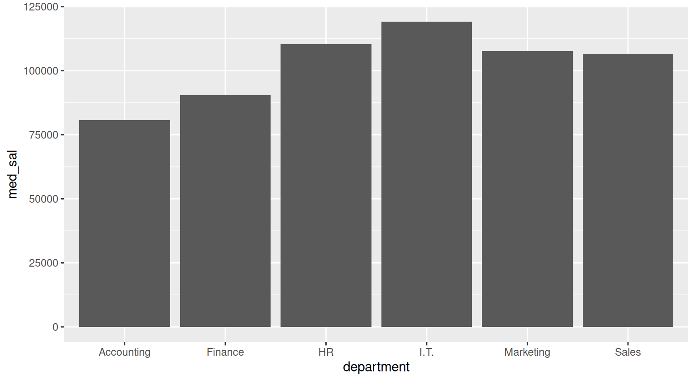
Exercise 7
You can use the split() function to split a dataset according to grouping variable. Here, we want to split the original dataset in many smaller datasets, where each smaller dataset collects employees from a specific department
dt_by_dept <- split(dt, dt$department)
typeof(dt_by_dept)[1] "list"the split() function returns you a list. In particular, it is a list of datasets, department by department, as you can see
dt_by_dept$Accounting
# A tibble: 23 × 6
last_name first_name department seniority salary ID
<chr> <chr> <chr> <dbl> <dbl> <dbl>
1 Thornock Javonte Accounting 6 81101. 1006
2 Garcia Mauricio Accounting 8 86834. 1007
3 Khuu Vivian Accounting 12 107517. 1019
4 Miranda Jonathan Accounting 4 74053. 1020
5 Lucero Ashley Accounting 2 55421. 1022
6 Heng Marina Accounting 0 42770. 1026
7 Crosby Danielle Accounting 13 111073. 1036
8 al-Hamdan Thaamira Accounting 10 98093. 1051
9 al-Farag Mukarram Accounting 6 74256. 1060
10 Taft Austin Accounting 1 51476. 1067
# ℹ 13 more rows
$Finance
# A tibble: 32 × 6
last_name first_name department seniority salary ID
<chr> <chr> <chr> <dbl> <dbl> <dbl>
1 Kierstead Tyana Finance 3 73702. 1014
2 Hawk James Finance 6 90241. 1015
3 Mcintosh Cleevens Finance 8 107662. 1017
4 Schmidt Benjamin Finance 13 129277. 1025
5 Huynh Alicia Finance 0 61532. 1027
6 Wiedmaier Dhipthika Finance 13 128548. 1028
7 Mccormick Ryan Finance 5 80248. 1037
8 Ngu Hannah Finance 15 139102. 1040
9 Omani Jonathan Finance 13 131979. 1042
10 Wilson Madison Finance 12 126816. 1045
# ℹ 22 more rows
$HR
# A tibble: 20 × 6
last_name first_name department seniority salary ID
<chr> <chr> <chr> <dbl> <dbl> <dbl>
1 Whitaker Jalen HR 15 164507. 1002
2 Gilroy Sara HR 1 62324. 1016
3 Dennis-Lopez Justin HR 14 158961. 1018
4 Yuan Joseph HR 2 62636. 1031
5 al-Shaikh Shakeela HR 1 61169. 1035
6 Colunga Derek HR 12 147608. 1043
7 Garcia Lares Cheyenne HR 10 122904. 1044
8 Rogers Alexandra HR 8 114061. 1047
9 el-Din Azza HR 10 124099. 1054
10 Molina Braxton HR 3 75562. 1061
11 Parra Mayra HR 5 90524. 1062
12 Schlundt Amanda HR 9 114741. 1072
13 Martinez Janet HR 7 98415. 1075
14 Neppl Samantha HR 14 151313. 1081
15 el-Ebrahim Rafeeda HR 8 113015. 1083
16 Abenes Thao HR 5 89811. 1084
17 Cao Leighton HR 8 107499. 1092
18 Gudino Cisneros Brittany HR 6 97372. 1096
19 Garcia Rossy HR 8 113907. 1120
20 Cloud Dipika HR 3 71823. 1142
$I.T.
# A tibble: 25 × 6
last_name first_name department seniority salary ID
<chr> <chr> <chr> <dbl> <dbl> <dbl>
1 Holguin Austin I.T. 9 138793. 1004
2 Hoang Eric I.T. 6 106614. 1011
3 Shazier Alea I.T. 10 148184. 1012
4 Westrich Rachael I.T. 3 74821. 1013
5 Lobato Rashaina I.T. 7 116607. 1030
6 Tutt Jerry I.T. 15 192685. 1032
7 Horton Kayla I.T. 6 108830. 1039
8 Sherbon Sydney I.T. 10 146050. 1048
9 Garcia Lamas Samuel I.T. 4 86101. 1050
10 al-El-Sayed Muna I.T. 14 181644. 1052
# ℹ 15 more rows
$Marketing
# A tibble: 22 × 6
last_name first_name department seniority salary ID
<chr> <chr> <chr> <dbl> <dbl> <dbl>
1 al-Harron Fikra Marketing 4 72654. 1001
2 Martinez Yessica Marketing 9 108185. 1023
3 Green Sarye Marketing 15 154446. 1029
4 Wall Kayla Marketing 4 79165. 1063
5 Wynter Michael Marketing 2 64957. 1065
6 Briseno Dominick Marketing 15 154728. 1073
7 Hennefeld Mitchell Marketing 6 85930. 1074
8 Mccarthy Angelica Marketing 12 137013. 1080
9 Diltz Zachary Marketing 4 75023. 1087
10 Magor Jacob Marketing 15 156230. 1093
# ℹ 12 more rows
$Sales
# A tibble: 28 × 6
last_name first_name department seniority salary ID
<chr> <chr> <chr> <dbl> <dbl> <dbl>
1 Pillow Cleevens Sales 7 102665. 1003
2 Bertsch Damon Sales 12 140699. 1005
3 Cheung Timothy Sales 7 100437. 1008
4 al-Momin Mu'mina Sales 0 47359. 1009
5 Vogltanz Jesse Sales 12 141815. 1010
6 Hernandez Chanelle Sales 14 155107. 1021
7 Pyo Courtney Sales 3 70371. 1024
8 Perkins Senaiet Sales 7 104424. 1033
9 Smith Lawrence Sales 1 59669. 1034
10 Freeman Ali Sales 3 72765. 1038
# ℹ 18 more rowsIf you input a list in write_xlsx(), it creates an excel file with one sheet for each dataset in the list
write_xlsx(dt_by_dept, path=here("multi_sheet.xlsx"))Practice 2
Setup
I saved my R code in a script called practice2.R which is stored in the project folder.
library(tidyverse)
library(here)
library(readxl)
library(writexl)
# declare where you are in your project folder
i_am("practice2.R")
# construct the path to the new data
path2 <- here("data", "employees_company2.xlsx")
# read the data and store it in dt2
dt2 <- read_xlsx(path=path2)Exercise 1
The new dataset is very similar to the previous one, but column names exhibit inconsistencies: spaces, capitalised initial letters, capitalised words etc.
dt2# A tibble: 200 × 6
`Last NAME` `First-name` department Seniority salary ID
<chr> <chr> <chr> <dbl> <dbl> <dbl>
1 Sandoval Jerika Sales 1 62222. 1001
2 Lucas Mark HR 11 73847. 1002
3 Pasang Taylor Sales 9 126987. 1003
4 Peters Christopher Sales 2 70845. 1004
5 Thomas Noel HR 10 NA 1005
6 Geshick Angel HR 6 58865. 1006
7 White Alton HR 12 72237. 1007
8 Parkhill Seth Marketing 15 133987. 1008
9 Balogh Joshua Finance 10 136700. 1009
10 al-Shahin Tuhfa Marketing 13 119953. 1010
# ℹ 190 more rowsIt is not a problem per se, but it might lead to syntax errors (for example, next time you’ll need to extract the seniority variable from the dataset, will you remember that Seniority has capitalised first letter while that’s not the case for salary?). To avoid confusion, it is convenient to stick to somo common naming standards, such as the snake_case, where no capitalisation is allowed and spaces are replaced by underscores.
You can change a variable name manually
dt2 |>
rename(last_name = `Last NAME`)# A tibble: 200 × 6
last_name `First-name` department Seniority salary ID
<chr> <chr> <chr> <dbl> <dbl> <dbl>
1 Sandoval Jerika Sales 1 62222. 1001
2 Lucas Mark HR 11 73847. 1002
3 Pasang Taylor Sales 9 126987. 1003
4 Peters Christopher Sales 2 70845. 1004
5 Thomas Noel HR 10 NA 1005
6 Geshick Angel HR 6 58865. 1006
7 White Alton HR 12 72237. 1007
8 Parkhill Seth Marketing 15 133987. 1008
9 Balogh Joshua Finance 10 136700. 1009
10 al-Shahin Tuhfa Marketing 13 119953. 1010
# ℹ 190 more rowsor you can leverage some convenient helper functions, such as the clean_names() function from the janitor package
library(janitor)
dt2 <- dt2 |>
clean_names()
dt2# A tibble: 200 × 6
last_name first_name department seniority salary id
<chr> <chr> <chr> <dbl> <dbl> <dbl>
1 Sandoval Jerika Sales 1 62222. 1001
2 Lucas Mark HR 11 73847. 1002
3 Pasang Taylor Sales 9 126987. 1003
4 Peters Christopher Sales 2 70845. 1004
5 Thomas Noel HR 10 NA 1005
6 Geshick Angel HR 6 58865. 1006
7 White Alton HR 12 72237. 1007
8 Parkhill Seth Marketing 15 133987. 1008
9 Balogh Joshua Finance 10 136700. 1009
10 al-Shahin Tuhfa Marketing 13 119953. 1010
# ℹ 190 more rowsExercise 2
summary(dt2) last_name first_name department seniority
Length:200 Length:200 Length:200 Min. : 0.000
Class :character Class :character Class :character 1st Qu.: 4.000
Mode :character Mode :character Mode :character Median : 8.000
Mean : 7.665
3rd Qu.:11.000
Max. :15.000
salary id
Min. : 44817 Min. :1001
1st Qu.: 70802 1st Qu.:1051
Median : 98066 Median :1100
Mean : 98716 Mean :1100
3rd Qu.:121850 3rd Qu.:1150
Max. :187488 Max. :1200
NA's :20 On top of returning summary statistics such as mean and quantiles, the summary() function also returns you the number of missing values (NA) observed on each column. In this case, we get 20 NAs on the salary variable
We are asked to impute them by using the median salary of the departmet of reference. We can do this by combining the group_by(), mutate() and replace()
dt2_imputed <- dt2 |>
group_by(department) |>
mutate(salary = replace(salary, is.na(salary), median(salary, na.rm=TRUE)))
dt2_imputed# A tibble: 200 × 6
# Groups: department [6]
last_name first_name department seniority salary id
<chr> <chr> <chr> <dbl> <dbl> <dbl>
1 Sandoval Jerika Sales 1 62222. 1001
2 Lucas Mark HR 11 73847. 1002
3 Pasang Taylor Sales 9 126987. 1003
4 Peters Christopher Sales 2 70845. 1004
5 Thomas Noel HR 10 66857. 1005
6 Geshick Angel HR 6 58865. 1006
7 White Alton HR 12 72237. 1007
8 Parkhill Seth Marketing 15 133987. 1008
9 Balogh Joshua Finance 10 136700. 1009
10 al-Shahin Tuhfa Marketing 13 119953. 1010
# ℹ 190 more rowsThis new version of the data, now has no missing values
summary(dt2_imputed) last_name first_name department seniority
Length:200 Length:200 Length:200 Min. : 0.000
Class :character Class :character Class :character 1st Qu.: 4.000
Mode :character Mode :character Mode :character Median : 8.000
Mean : 7.665
3rd Qu.:11.000
Max. :15.000
salary id
Min. : 44817 Min. :1001
1st Qu.: 72020 1st Qu.:1051
Median :100575 Median :1100
Mean : 99095 Mean :1100
3rd Qu.:120793 3rd Qu.:1150
Max. :187488 Max. :1200